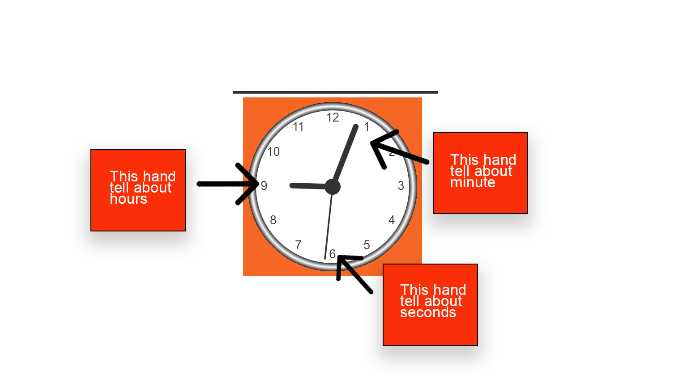

Analog clock

| Number |
Hour |
Minute |
Seconds |
| 1 |
0ne or thirteen |
five minute |
five second |
| 2 |
two or fourteen |
ten minute |
ten second |
| 3 |
three or fifhteen |
fifteen minute |
fifteen second |
| 4 |
four or sixteen |
twenty minute |
twenty second |
| 5 |
five or seventeen |
twenty five minute |
twenty five second |
| 6 |
six or eighteen |
thirdty minute |
thirdty second |
| 7 |
seven or nineteen |
thirdty five minute |
thirdty five second |
| 8 |
eight or twenty |
fourty minute |
fourty second |
| 9 |
nine or twenty one |
fourty five minute |
fourty five second |
| 10 |
ten or twenty two |
fifty minute |
fifty second |
| 11 |
elevent or twenty three |
fifty five minute |
fifthy five second |
| 12 |
twelve or zero |
zero |
zero |